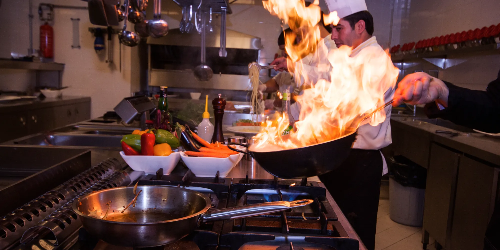

Fundado en 1995, "El Sabor del Fogón" nació como un pequeño sueño familiar en el corazón de la ciudad. Con recetas transmitidas de generación en generación, empezamos con solo tres mesas y mucha ilusión. Hoy, nos enorgullece ser un referente de la gastronomía local, manteniendo siempre el toque casero que nos caracteriza.
Ofrecer a nuestros clientes una experiencia culinaria inolvidable, combinando ingredientes frescos de la región con un servicio cálido que los haga sentir como en casa.
✨ Calidad en cada ingrediente.
🤝 Honestidad y respeto por el cliente.
👨🍳 Pasión por la cocina tradicional.